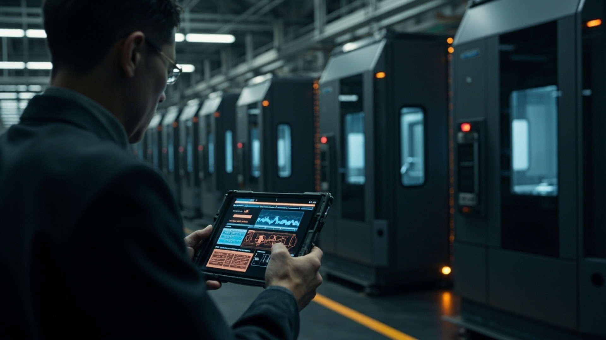
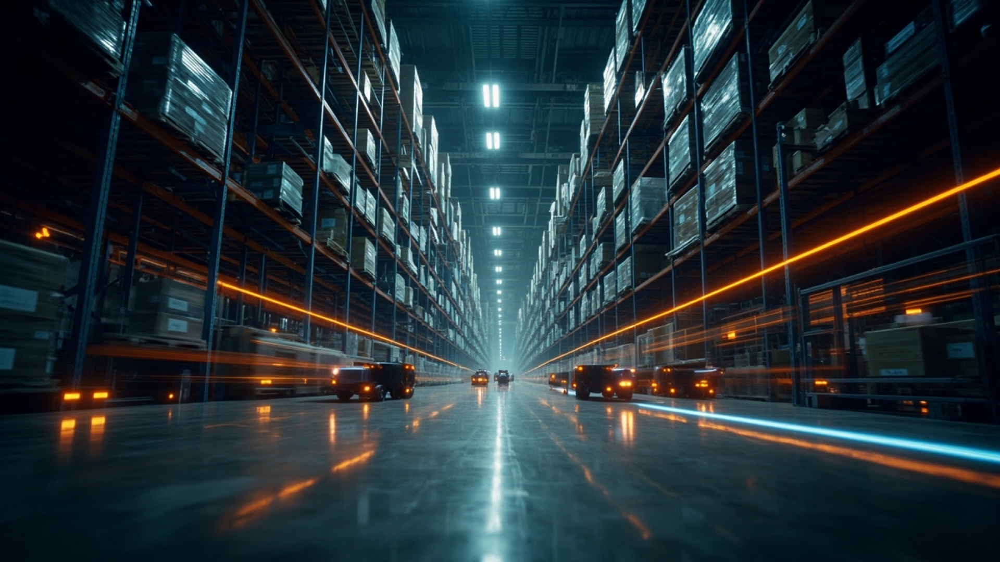

BELIEF 01 // 科技平权
让大模型成为生产力水电煤
十年工业软件功底，把千亿大模型变成中小企业用得起的生产力水电煤。
AI 不应只是巨头的特权可负担 · 高回报

EST. 2015 · 国家级科技型中小企业 · 10年实业软件沉淀
深耕实业十载。我们打造企业级 AI+ERP 智能中枢与一人公司效能军团，让大模型在车间与商机中创造真金白银。
秒级排产
复杂工序动态重算 · 设备稼动率提升 +28%
24h 自动成单
跨时区全语种销冠响应 · 夜间询盘转化 +300%
旧系统零推倒
无损挂接现有 ERP 与机床 · 100% 保护历史数据
Manifesto // 跨越硅基智能与碳基实业的鸿沟
BELIEF 01 // 科技平权
十年工业软件功底，把千亿大模型变成中小企业用得起的生产力水电煤。
BELIEF 02 // 拒绝套壳与推倒重来
软件迁就业务，而非业务削足适履；旧系统零推倒无损升级，让每一家企业的工艺基因被完整保留。
BELIEF 03 // 结果与收益导向
不按代码行数自嗨，只按帮您省下多少工时、多赚多少订单说话。

Business Before / After // 直观收益对账
不堆砌功能列表，我们把每个业务场景的「传统痛点」与「智枢接管后的收益」摆在同一张账本上。
SPECIES 01 // ENTERPRISE CORE · B2B 深度定制
Autonomous Enterprise Resource Planning
将多模态大模型直接嵌入采购、排产、仓储、财务全链路，让系统从被动记录死数据的账本，进化为主动预警风险、自主调度资源的企业硅基大脑。

车间排产
人工拿 Excel 吵一上午、插单全乱
→5 秒全局智能排产，设备稼动率 +28%
审单核价
复杂图纸人工翻账 3 天、漏算亏本
→30 秒解析 CAD/单据精准报价，0 漏算
库存与业财
百万呆滞料积压、月底才算清账
→动态库存预警与业财一体，资金周转 +30%
系统改造
传统换 ERP 停工半年、全员抵触
→旧系统零推倒无损接入，1对1 包教包会
SPECIES 02 // SUPER INDIVIDUAL · OPC 专属武装
One-Person Company Intelligence Matrix
为高认知独立创业者、主理人与垂直工作室编排 7×24 小时协同运转的 AI 获客增长官、全天候金牌销冠、自动化交付工程师与财务法务助理，让一个人活成一支高市值特种部队。

跨国接单
半夜海外询盘熟睡漏回、大单流失
→24h 多语种销冠客服，睡梦中自动谈判收定金
获客营销
写文案剪视频耗尽精力、招人昂贵
→全网获客内容矩阵自动分发，1 人顶 10 人团队
跟单履约
报关、物流、催款一人连轴转
→全自动跟单 RPA 闭环，喝茶时全球业务自转
Independent Story // 独立补充叙事
不是演示视频里的 AI，而是老张和小李真实会经历的一天。切换视角，看见每一个时间节点上「接入前」与「智枢 AI 接管后」的差别。
老张 · 宁波非标五金制造厂老板 · 65 人工厂 · 年产值约 4,000 万。过去他的手机 24 小时不敢静音，现在他敢在晚上 11 点关机。以下为同一天的真实节点对比。
被车间主任电话叫醒：3 号注塑机异响，急单交期要崩。
→AI 已提前 6 小时预警设备振动异常，维修工单与备机切换方案自动生成。
客户临时插单，四个车间拿 Excel 手工重排，吵到中午。
→5 秒全局重排产，交期、机台负荷与物料缺口一屏推演，插单不再打乱全厂。
仓库说呆滞料又压了 200 万，财务说月底才知道这单赚不赚。
→动态库存预警 + 业财一体，每笔订单实时毛利与替代用料建议直接推到手机。
小李 · 跨境独立站主理人 · 一人公司 · 客单价 $800-$6,000。过去她最怕睡觉，因为欧美的白天是她的半夜；现在她最怕的，是 AI 把订单接得太多。以下为同一天的真实节点对比。
美国客户发来询盘，小李熟睡未回，第二天发现订单已被同行接走。
→多语种销冠 Agent 8 秒响应，调用产品库与阶梯报价，自动收下 $4,200 定金。
起床先回 47 条 WhatsApp，再花一上午写独立站 SEO 文章。
→AI 已生成 5 条短视频脚本 + 2 篇 SEO 长文并定时发布，小李只需审一遍品牌调性。
一边回客服一边做报关单、填物流单、催供应商，晚饭都顾不上。
→全自动跟单 RPA 生成报关与物流单据，客户自动收到节点播报，小李只负责喝茶。
Evolution & Roadmap // 实业背书
自 2015 年创立宁波依然网络科技以来，我们用十年车间排产、进销存账本与政企系统集成功底，奠定了比纯算法初创团队更懂实体制造的工程壁垒。
Trusted by Industry & Institutes

Investor Relations & Ecosystem // 与远见者同行
IR & STRATEGIC PARTNERSHIP · 面向资本、渠道与算力生态的长期协作框架。
Capital Vision / 资本价值
传统 SaaS 与 ERP 的 AI 原生化重写窗口已开启，我们占据企业核心工作流入口与高粘性私有数据资产。
Channel Partner / 渠道与商协会共赢
依托已落地验证的商会/协会 AI 数字化服务底座，面向地方产业集群、行业商协会及软硬件集成商开放定制底座与高额分润。
Tech Alliance / 算力与模型生态
与主流开源/闭源基座大模型、国产算力一体机厂商深度耦合，共同打造“开箱即用、数据不出域”的软硬一体行业智算终端。
05. INITIATE TRANSMISSION // 加密直达
无论您是寻求企业 AI+ERP 破局的实业家、渴望武装自我的超级个体，还是关注产业智能化的投资机构，我们的创始与专家团队均静候您的垂询。
HOTLINE / WECHAT · 林经理专线
159-6841-4820微信同号 · 7×24 响应
HEADQUARTERS · 研发与实业交付中心
中国 · 宁波市江北区长三角实业交付中心 · 宁波 · 浙江
29.8892°N / 121.5503°E